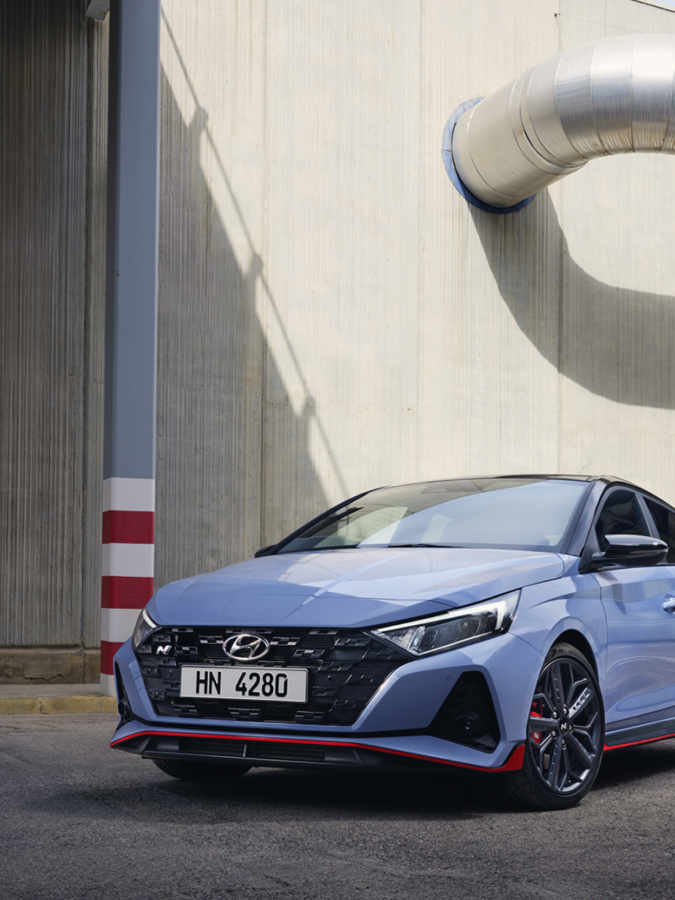
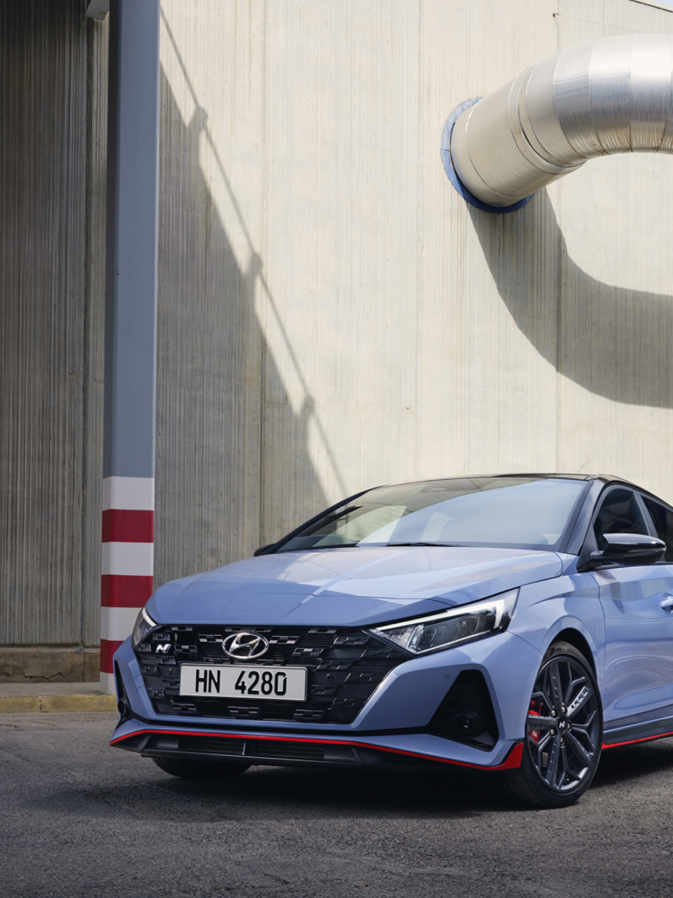

The all new i20 N
Dedicated to the thrill of driving
Overview
This is my stage.
Who says stages are only for the selected few? Every driver deserves to feel life to the fullest.
Based on the class-leading i20, This machine is the kind that makes you rev up at a stoplight just before it turns green and say, “This is my stage.”
 

Performance
Rally Car on the Street
The all-new i20 N is a direct successor of i20 WRC’s winning DNA, guaranteed to provide motorsport-derived racetrack capabilities in daily driving. With its lightweight body of 1,190 kg and reinforced rigidity, this pocket rocket achieves powerful and agile movements. It will transform even your backyard into your personal rally stage.
204ps
power
28.0kgf-m
Max. torque
204sec
0-100km/h
Rally Car on the Street
The all-new i20 N is a direct successor of i20 WRC’s winning DNA, guaranteed to provide motorsport-derived racetrack capabilities in daily driving. With its lightweight body of 1,190 kg and reinforced rigidity, this pocket rocket achieves powerful and agile movements. It will transform even your backyard into your personal rally stage.


The Go-kart Feeling We All Enjoy
N Power Sense Axle at the front and Dual Coupled Torsion Beam Axle (CTBA) at the rear provides higher stiffness for improved ride and handling performance. With reduced steering gear ratio of 12.0 (i20: 12.4), the all-new i20 N offers direct and precise steering for confident, sporty driving. These N DNA driving dynamic allows the agility that of a go-kart.

Devour Every Corner
The all-new i20 N is equipped with N Corner Carving Differential, a Mechanical Limited Slip Differential (m-LSD) that utilizes a mechanically controlled torsion gear type to efficiently transfer power to the front wheels. It provides optimum traction and enhances grip on every corner for a sportier and more agile ride.
High Performance Brake System
The high-performance brakes feature an increased front disc which is 40 mm larger than the base model for increased fading resistance, consistent brake pedal feel and maximized heat endurance capacity. Left-foot braking calibration and an N Two-Stage PWI (brake pad wear indicator) ensure the pleasure of safe track driving.

Shift the moment.
The i30 N has been enhanced with a new design focused on performance, emotion and statement. It is also equipped with more lightweight materials, resulting in more agility and better handling.

Lightweight components for better performance.
TThe weight saved through the new high-performance N Light Seats and
19" forged alloy wheels results in better performance and handling for a more agile driving experience.
Weight reduction
Removal of interior trim, motorsport wheels and tires contribute to 10% reduction of overall weight

Featured IONIQ 5 N technologies
N e-Shift and enhanced N Active Sound + make their motorsport debut as a world exclusive technologies only available for eN1 class racers
Everyday Sports Car
Weight reduction
Removal of interior trim, motorsport wheels and tires contribute to 10% reduction of overall weight
Featured IONIQ 5 N technologies
N e-Shift and enhanced N Active Sound + make their motorsport debut as a world exclusive technologies only available for eN1 class racers
The N 8-Speed Wet Dual-Clutch Transmission (N DCT)
A rightful addition on the new i30 N: the wet-type 8-speed dual clutch transmission with paddle shifters and new N performance functions for an even sportier experience.

The all-new N DCT
Available for the first time: a wet-type 8-speed dual clutch transmission with paddle shifters and new N performance functions for an even sportier experience.

Fast shift at your fingertips
The racing-inspired paddle shifters put fast, effortless gear changes at your fingertips. And they’re mounted on the steering wheel, you can shift more efficiently when cornering.
Design
Uncompromised Exterior Design
The all-new i20 N presents a WRC-inspired look to match its high-performance experience and create an emotional appeal for drivers. The exterior design emphasizes its high-performance nature by integrating Hyundai’s rallying heritage with the latest Sensuous Sportiness design identity. The Dual Layered Spoiler, Duct Air Guide and Front Splitter improves aerodynamics by minimizing drag and lift power.

Front
Radiator grille with a chequered flag pattern.

Side
Side skirts with red accents.

Rear
Red Accents.
Interior that Complements Performance
The interior of the all-new i20 N provides a driving space that complements the dynamic driving experience it provides. N-specific elements such as N dedicated sport seats with an integrated headrest, N steering wheel, N gear knob, and sporty N metal pedals all play a part of the experience. The iconic red Rev Button gives a finishing touch to the N feeling, one that excites you emotionally.

Heated steering wheel
Get warm hands on cold days: the grippy N steering wheel offers an easily-reachable control while it can be heated at your convenience!

Supportive sports seats
Sit like a pro in the dedicated sports seats with an integrated headrest, leather accents and blue stitching. The seats aren’t just supportive on long drives, they can also be heated on colder days.
Upgraded performance cockpit
Created for and by people who truly love cars, the new i30 N's sleek and sporty interior embraces and excites. The cockpit is as much about control as it is about comfort with the new N Light Seats and bigger touch screen.

N steering wheel.
Featuring exclusive Performance Blue stitching and the N logo, the leather N steering wheel puts driving performance features right at your fingertips – like for example, the dedicated buttons for N Mode and N Grin Shift.

N Cluster.
See engine oil temperature, torque, and turbo boost at a glance. The shift timing feature supports track driving. The red zone of the variable LED rev-counter changes according to the oil temperature.

N Light Seats- Sit like a pro.
Covered in premium leather and Alcantara® materials, the lightweight, high-performance monoform seats feature an illuminated N logo and pronounced bolsters for excellent lateral support.
N DCT shifter.
The N DCT shifter features the N logo, sporty metal accents, a Performance Blue racing line and stitching as well as leather inserts for better grip and even more motorsport feeling.
Technology
Comprehensive safety package
The i20 N is equipped with Hyundai Smart Sense Advanced Drivers Assistance System features. This includes features such as Forward Collision Assist City / Interurban / Pedestrian (FCA), Intelligent Speed Limit Assist (ISLA), Lane Following Assist (LFA), and Blind-Spot Collision Warning (BCW).
- Forward Collision Avoidance Assist with cyclist detection (FCA)
- Sensing the road ahead with radar and a camera, the FCA system automatically brakes when it detects sudden braking by the car ahead or pedestrians and bicycles on the road.
- Intelligent Speed Limit Assist (ISLA)
- Audio and visual cues appear when the speed limit is exceeded. Combined with Manual Speed Limiter, ISLA can adjust the car speed automatically.
- Lane Following Assist (LFA)
- The all-new i20 N features Lane Following Assist (LFA): When activated, it keeps the car centered in its lane at speeds between 0 and 180 km/h on motorways and city streets.
- Blind-Spot Collision Warning (BCW)
- The BCW system uses radar sensors in the rear bumper to monitor and warn the driver of an approaching vehicle in the driver's blind spot area.
Specification
i20 N Specification

- Engine
- 1.6 GDi
- Transmission
- 6 MT
- Power (PS)
- 204
- Max. torque(kgfm)
- 28.0
- Top speed (km/h)
- 230
Performance summer tires may cause moderate noise in ambient temperatures under 7º C.
Winter tires recommended for optimal performance in low temperature conditions.
Specification
Project RM
Specification
- Maximum power
- 300 horsepower
- Maximum torque
- 39kgf · m
- 0-100km/h
- -
- Weight distribution
- Front 43 / Back 57
- Engine
- -
- Aerodynamic design
- Ground clearance is 120mm lower than general car
- Significance
- Hyundai’s first midship car based on the beloved Veloster. The center of gravity is in the center of the car, so the high-speed Cornering performance is greatly improved.
- Maximum power
- 300 horsepower
- Maximum torque
- 39kgf · m
- 0-100km/h
- 4.7 seconds
- Weight distribution
- -
- Engine
- High performance 2.0 T-Gdi engine
- Aerodynamic design
- -
- Significance
- Weight of body reduced 132kgcompared to RM14 (Aluminum, new CFRP materials, etc.) Improved high-speed driving stability by reinforcing downforce that presses the car body at high speed.
- Maximum power
- 300 horsepower
- Maximum torque
- 39kgf · m
- 0-100km/h
- 4.7 seconds
- Weight distribution
- -
- Engine
- High performance 2.0 T-Gdi engine + 48V electric supercharger (e-Supercharger)
- Aerodynamic design
- -
- Significance
- Improvement of emotional anddetailed driving performance compared to RM15. (Exhaust sound tuning, active spoiler, etc.)
Specification
Project RM
Specification


Related
The all-new IONIQ 5 N

IONIQ 5 N 2024 World Performance Car Award Winner

Mastering Japanese tracks, one drift at